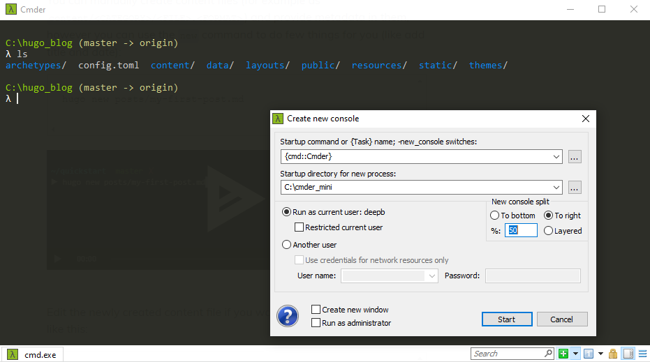
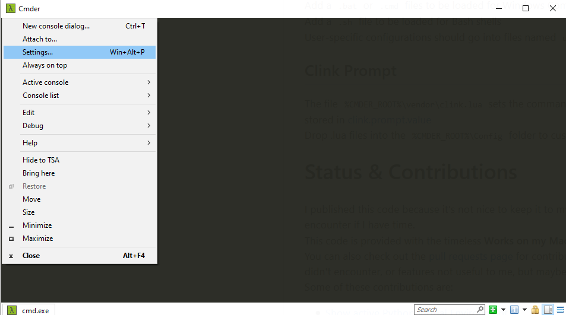
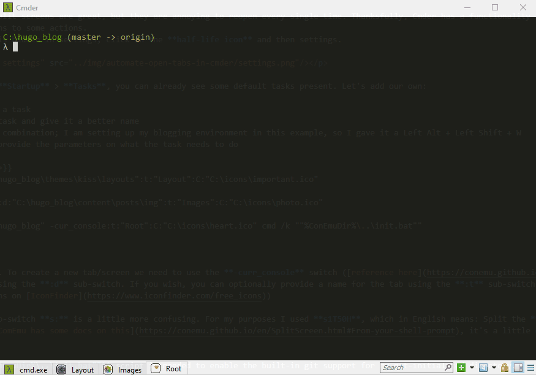

I have been using Cmder for about a year now, it’s an excellent console emulator for Windows based on ConEmu emulator, but with a few bells and whistles thrown in. I got it mainly for the tabs and split screen features (which ConEmu also supports), but Cmder looks cooler and has Git support out of the box. At work I like to have git for front-end open on the left side and git for back-end open on the right side; then I have another tab open for yarn commands.

Multiple tabs and split screens are great, but they are annoying to reopen every single time. Thanksfully, Cmder has a functionality called Tasks which allows the user to bind keyboard combinations to some actions. This functionality is hidden in settings, click on the half-life icon and then settings.

In settings, under Startup > Tasks, you can already see some default tasks present. Let’s add our own:
- Click “+” to add a task
- Select your new task and give it a better name
- Pick your hotkey combination; I am setting up my blogging environment in this example, so I gave it a Left Alt + Left Shift + W
- Now, we have to provide the parameters on what the task needs to do
-cur_console:d:"C:\hugo_blog\themes\kiss\layouts":t:"Layout":C:"C:\icons\important.ico"
-cur_console:s1T50H:d:"C:\hugo_blog\content\posts\img":t:"Images":C:"C:\icons\photo.ico"
-cur_console:d:"C:\hugo_blog" -cur_console:t:"Root":C:"C:\icons\heart.ico" cmd /k ""%ConEmuDir%\..\init.bat""Let’s break it down. To create a new tab/screen we need to use the -curr_console switch (reference here); we can provide the directory to open using the :d sub-switch. If you wish, you can optionally provide a name for the tab using the :t sub-switch and even an icon using the C: sub-switch. (I found some cool icons on IconFinder)
The split-screen sub-switch s: is a little more confusing. For my purposes I used s1T50H, which in English means: Split the 1st screen by taking 50%, stacking horizontally. To stack the screens vertically just change the H to a V. ComEmu has some docs on this, it’s a little dry to read, but may help further configure your environment.
Lastly, the %ConEmuDir%..\init.bat script is needed to enable the built-in git support for my git-initialized directory.
The result of our labour. Look at those cute icons! Ok, I’m a geek.
